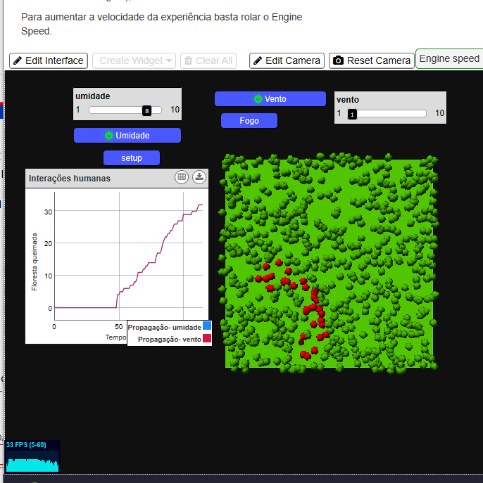
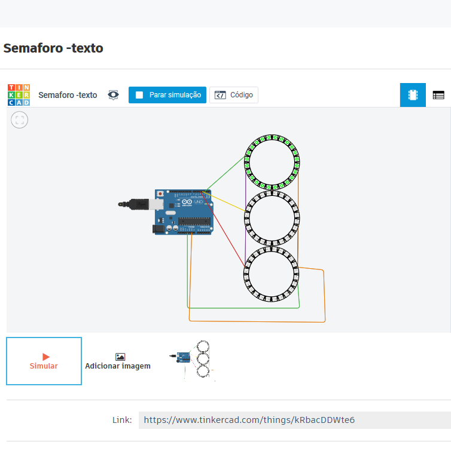

PRIMEIRO PERÍODO
matérias
CÁLCULO I
Cálculo é uma das matérias mais temidas no curso e pode ser bem complexa se você não se dedicar. Minha primeira aula na faculdade foi de Cálculo e já amei de primeira, já que escolhi o curso exatamente pela proximidade com a matemática. Infelizmente a maior parte da experiência foi online, mas faz parte!
Nesse período, revi todas as funções que a gente estuda durante o Ensino Médio e depois vimos realmente um início de cálculo, que são os limites e as derivadas. Essas duas matérias são de extrema importância para o curso e me arrependo de ter negligenciado um pouco meus estudos, como estava em quarentena foi difícil colocar tudo em prática mantendo uma rotina com tudo que estava acontecendo, mas corri demais e consegui ficar em dia com os limites e as derivadas.
Acho que uma das coisas que mais aprendi e que seria uma dica legal para quem está agora no primeiro período é: não deixe de estudar as matérias no mesmo dia que você aprende, isso é fundamental para você ter dúvidas e fixar o conteúdo (mesmo sendo um clichê nível master, SIGA A DICA). Além disso faça muitos exercícios, porque tem alguns conteúdos que você só aprende na prática mesmo e foque muito em cálculo. E pode ficar calmo, se eu consegui, você consegue, mas se não der de primeira e daí, estude mais e se supere na próxima!
ALGORITMO E ESTRUTURA DE DADOS I
Algoritmo e estrutura de dados, mais carinhosamente chamada como AEDS, é uma das matérias mais importantes para o aprendizado da lógica da programação. Nela você aprende como construir um algoritmo, ou seja, como resolver um problema encontrando alguma forma de solucionar, já que programar é isso: resolver desafios, pensar fora da caixa. Parece simples, mas é bem complexo e é a parte mais difícil da programação, já que as linguagens você pega bem rapidinho.
A primeira linguagem que eu aprendi foi C, uma linguagem relativamente simples, mas bem poderosa. Nela fizemos uma calculadora e vários desafios que consistiam em fazer operações matemáticas. Foi incrível ver o computador reproduzindo o que você pedia, como nunca tinha tido contato com qualquer código de programação, me senti no país das maravilhas, mais animada do que nunca para continuar o curso.
Ficamos um tempão em C, hoje vejo que penei para aprender no início, não entendia nada e me sentia mais burra ainda por causa dos meus colegas que sabiam e tinha uma base de computação muito mais consolidada. Mas na maioria, todo mundo estava no mesmo nível.
Já no finalzinho, aprendemos C++, uma linguagem com certas características de POO (Programação Orientada por Objeto) e quando aprende POO tudo fica mais fácil, os olhinhos até brilham. Gostei muito.
DICA: ESTUDE MUITO, principalmente se você for que nem eu, a que nunca viu a computação. Tenha fé em você. Ah outra coisa que só aprendi com a última prova, antes de codificar sua solução, ou seja, programar, pense e reflita sobre o problema, nunca vá direto para a programação, porque com certeza você vai ficar perdido, mesmo que dê vontade de já digitar todos os códigos.
LABORATÓRIO DE INICIAÇÃO À PROGRAMAÇÃO
Mais conhecida como a famosinha LIP, essa matéria é completamente diferente do método tradicional de aprendizado, já que não tem nenhuma avaliação e todo o processo avaliativo é bem flexível. Na minha primeira aula não entendi o motivo da matéria, mas foi a matéria que mais me desafiou a fazer coisas que a gente não pensa quando entra no curso de Ciência da Computação, atividades doidas e plataformas diversas, “fora da caixa”. Além disso por ser uma aula menos tradicional, me sentia mais livre, mas não vou mentir, tinha alguns trabalhos que fazíamos na força do ódio. No final deu tudo certo e tudo que eu fiz foi muito gratificante.
SCRATCH
Scratch é uma linguagem de programção em blocos criada pelo MIT em 2007, com intuito de ensinar criaças acima de 8 anos de maneira prática conceitos matemáticos e computacionais. Por ser uma linguagem que não exige nenhum conhecimento prévio a cerca de programação, esse foi o primeiro contato com a programação na disciplina LIP, parece bobo mas a base da programção não estar em saber conceitos e sim na lógica de como tudo funciona. Portanto vale a pena conferir o Scratch e se divertir um pouquinho.STARLOGO NOVA
StarLogo Nova é uma linguagem de programção também em blocos, mas diferente do Scratch, essa plataforma tem como interesse permitir que o usuário faça diversas simulações baseadas em agentes. Dessa maneira é possível desenvolver vários conhecimentos científicos, como epidemiologia, ecologia, geometria, pensamento computacional, entre outros.
O StarLogo é gratuito e roda em um navegador da Internet, com opções de compartilhamento de projetos - os alunos podem jogar jogos criados por outros e os professores podem usar simulações desenvolvidas pela comunidade StarLogo para ilustrar conceitos complexos.

TINKERCAD
O Tinkercad é uma ferramenta online de design de modelos 3D em CAD e também de simulação de circuitos elétricos analógicos e digitais, desenvolvida pela Autodesk. Por ser gratuito e fácil de usar, encontramos nele uma oportunidade de ensino de Programação Embarcada, visto que a primeira barreira encontrada pelos alunos é a de não possuir os componentes e o microcontrolador em mãos. É uma ferramenta muito interessante para quem é apaixonado por física.PROJETOS
JOGO SCRATCH VERSÃO INDIVIDUAL
Meu primeiro projeto foi desenvolver um jogo no SCRATCH. O jogo "SALVE A FLORESTA", tem como o intuito integrar o trabalho do cidadão, cientista e o do cientista da computação. A primeira fase contempla o cidadão e seu dever com o meio ambiente, já a segunda o cientista e como ele lida com as informações e por fim sobre o cientista da computação.
Visitar jogo no scratch
SATARLOGO NOVA
Nesse trabalho tivemos que criar uma simulação de algum assunto que nos interessa. Quando sentei para fazer achei bem mais complicadinho que a plataforma Scratch, mesmo os dois sendo linguagem de blocos, mas ao passar do tempo tudo foi se desenrolando. Acabei por fazer uma simulação de como os incêndios se propagam pelas florestas. Visitar simulação
JOGO SCRATCH VERSÃO EM EQUIPE FINAL
Depois de termos desenvolvidos um jogo individualmente, o nosso terceiro projeto foi nos organizarmos em grupo e unir nossos conhecimentos em Scratch e criar um novo jogo. Nesse jogo era necessário divulgar ciência e ciência da Computação. Meu grupo (Raíssa Lopes e Camila Melo) decidiu em criar um jogo de luta que utiliza vários cientistas famosos a fim de causar curiosidade nos jovens sobre aquelas pessoas. Além do jogo em si, fizemos um blog e vídeo de divulgação para o jogo!Visitar o blog

Visitar jogo no scratch
ARDUÍNO
Nesse projeto tivemos que fazer um semáforo inovador para automóveis. Esse trabalho foi o primeiro que eu não tinha a mínima noção de como fazer, mas com muita criatividade e ajuda consegui fazer um semáforo até que interessante. Visitar simulação
INTRODUÇÃO À COMPUTAÇÃO
Nessa matéria aprendemos sobre a história da computação, de sua evolução até como conhecemos ela hoje. Aprendemos sobre sobre o sistema binário, hexadecimal e octal, a lógica binária... ou seja, tudo relacionado aos famosos 0 e 1. É um conteúdo bem tranquilo e muito interessante, ver como tudo funciona por trás, a linguagem da máquina. Aprendemos também sobre sistemas operacionais, dentre os estudados tivemos contato com o Linux. Confesso que tive certo preconceito no início pelo fato de estar acostumada com a facilidade do Windows, mas me surpreendi e até que gostei, tanto que acabei baixando no meu computador. Mas não estou tão evoluída para abandonar de fato a praticidade do Windows, ainda mais que certos programas ainda não têm suporte para o Linux, infelizmente..
No final do semestre, veio uma matéria mais empolgante: Inteligência Artificial. Como era apenas introdução, não aprofundamos muito, mas estudar isso é muito doido para você ver que a computação pode viajar muito e tem muito que evoluir ainda. Espero um dia trabalhar com isso para ver ao vivo e na prática toda essa loucura futurística. Aqui tem um vídeo de um trabalho que fizemos sobre Smart Cities, uma ilusão que pensamos estar longe, mas que está invadindo e competindo com as cidades tradicionais que conhecemos! Espero estar viva e poder ver tudo isso que estudamos e idealizamos se tomando forma.
DESENVOLVIMENTO DE INTERFACES WEB
A matéria de WEB foi uma das que eu mais amei de fazer sem dúvida, porque mexe muito com páginas web, envolvendo muito design. Esse foi o primeiro na que a matéria entrou em vigor no primeiro período, já que 2020 seguiu um novo currículo que reformulou todas as matérias relacionadas a computação. Nela aprendemos como montar páginas com HTML, estilizar elas com CSS e dinamizá-las com Java Script, que aliás não tem nada a ver com a linguagem Java, para quem estava em dúvida.
Aprendemos também como é importante levar em consideração o UX (User Experience), como tornar um site responsável, ou seja possibilitar que a página se adapte a qualquer tamanho de tela, sem que perca a formatação, como cada computador “conversa” com o servidor e como o servidor passa as informações os sites para cada navegador além de aprender sobre o a história da WEB.
Fizemos diversos trabalhos e esse projeto, por exemplo, foi construído a partir dos conhecimentos adquiridos nessa matéria. Deixarei aqui meu primeiro site para que vocês possam conferir e ver em prática essa tal de responsividade.
Visitar o site
TRABALHO INTERDISCIPLINAR
Essa disciplina, como o próprio nome indica é uma matéria que envolve vários conteúdos, com diferentes professores e em grupo. O propósito dela era solucionar de alguma forma um problema na sociedade atual. Nas primeiras aulas aprendemos um pouquinho sobre organização, design, marketing e discutimos sobre problemas que achávamos persistentes para serem discutidos. Depois cada aluno fez um teste de personalidade para ver quais eram as qualidades de cada um, como dominância, influência e responsabilidade entre outros e escolheu o tema que mais o atraiu. A partir dos testes os professores montaram os grupos, tentando ao máximo misturas as pessoas para que cada grupo tivesse pelo menos um a pessoa com cada qualidade. O tema que eu escolhi foi: Morosidade no Sistema de Adoção e minha pontuação maior em relação ao teste foi influência.
A ideia é muito legal, mas entrar em regime remoto atrapalhou um pouquinho as dinâmicas da matéria e as que os próprios professores tinham planejado. Para resolver a questão do trabalho a gente bateu muito a cabeça porque teoricamente a demora de todo processo é causado pela demora na burocracia, ponto em que não podíamos de jeito nenhum interferir. Então conversamos com pessoas que já tinha adotado e aquelas que estavam enfrentando o processo e todas as conversas foram muito produtivas para nosso crescimento como humanos e para a aplicação no trabalho.
Depois de muito debater e conversa decidimos fazer um aplicativo que fosse capaz de ajudar as pessoas interessadas em adotar a se organizar com todos os documentos, sendo uma das ideias mostrar quais órgãos eram responsáveis para cada documento. O resultado foi muito positivo, tanto por termos feito um aplicativo desde o zero no primeiro período quanto por termos aprendido muito e aplicado os conhecimentos das outras matérias.
Esse vídeo eu produzi para a divulgação e a apresentação do projeto, um requisito para a entrega final.
Visitar o site